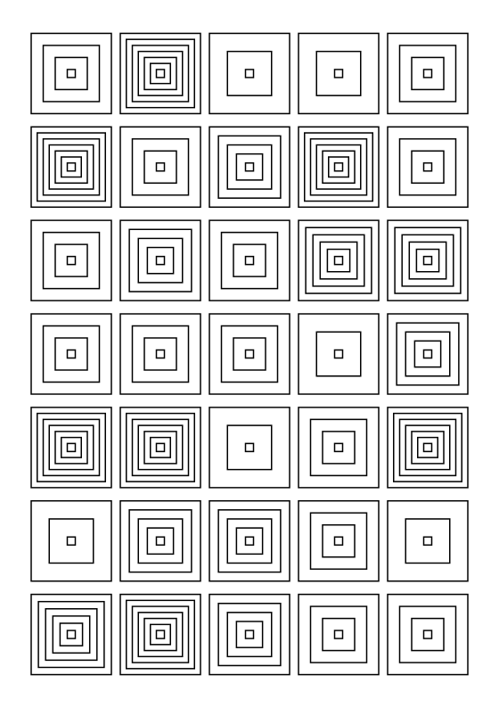
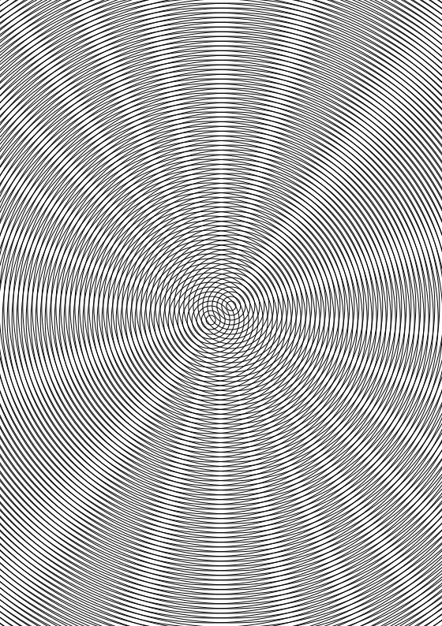

01 - Grid Primitives
Testing basic shapes, margins, and pen pressure using nested loop structures on an A5 canvas.
View Sketch
Moiré Patterns (Pending)02 - Moiré Patterns
Optical illusions through high precision. Overlapping concentric circles and radiating lines.
View SketchNoise Flow Fields (Pending)
03 - Noise Flow Fields
Simulating particle paths over a 2D Perlin noise vector field to create natural, organic flows.
View Sketch